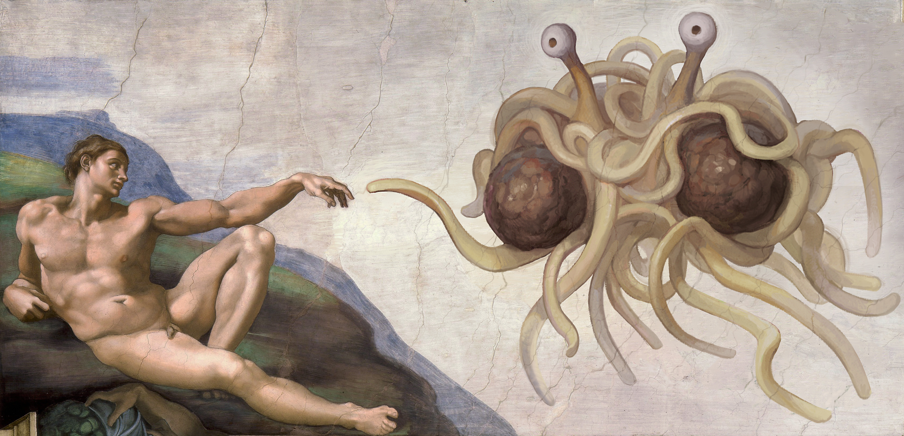

Sobre o Pastafarianismo
Assim como o judaísmo e outras religiões milenares, o Pastafarianismo também possui uma série de recomendações recebidas por um de seus piratas (Mosey) diretamente do Monstro do Espaguete Voador.
Originalmente eram 10 os Condimentos (a população pirata não conhecia a palavra "mandamento") transmitidos por MEV a Mosey, mas este perdeu dois deles enquanto descia a montanha tentando se equilibrar com as tábuas nas mãos. Deste modo, os seguidores do Pastafarianismo seguem apenas 8. Acredita-se que a índole mais pacífica do deus do Pastafarianismo é a principal razão do tom de pedido (Realmente preferiria que não...) utilizado nestas tábuas, diferença marcante em relação ao modo imperativo adotado pelos deuses de outras diversas religiões.
- 1. Realmente preferiria que você não agisse como um santarrão imbecil que se acha melhor que os outros quando descrever minha santidade espaguética. Se alguns não creem em mim, não tem problema. Na verdade, não sou tão vaidoso. Além disso, isso aqui não é sobre eles, então não mude de assunto.
- 2. Realmente preferiria que você não usasse a minha existência como um meio para oprimir, subjugar, castigar, eviscerar, ou ... você sabe, ser mau para com os outros. Eu não peço por sacrifícios, e a pureza é para a água potável, não para pessoas.
- 3. Realmente preferiria que você não julgasse as pessoas por seu aspecto, ou por como se vestem, ou pela maneira como falam, ou... olhe, seja simplesmente bom, está bem? Ah, e que te entre na cabeça: mulher = pessoa, homem = pessoa, igualzinho = igualzinho. Nenhum é melhor que o outro, a menos que falemos de moda claro, sinto muito, mas isso eu deixei às mulheres e a alguns homens que conhecem a diferença entre verde mar e fúcsia.
- 4. Realmente preferiria que você não fizesse coisas que ofendessem a você mesmo, ou a(o) seu(ua) parceiro(a) amoroso(a) mentalmente maduro(a) e com idade legal para tomar suas próprias decisões. Quanto a qualquer outro que se oponha, creio que a expressão é "vá se f***r", a menos que ache ofensivo, em cujo caso poderia apagar o televisor e sair para dar um passeio, para variar.
- 5. Realmente preferiria que você não desafiasse as ideias fanáticas, machistas e de ódio aos diferentes com o estômago vazio. Coma primeiro, depois vá ter com os escroques.
-
6. Realmente preferiria que você não construísse igrejas/templos/mesquitas/santuários multimilionários à minha santidade macarrônica quando o dinheiro poderia ser melhor empregado em (a escolha é sua):
A. Terminar com a pobreza.
B. Curar enfermidades.
C. Viver em paz, amar com paixão e abaixar o preço da televisão a cabo.
Posso ser um ser onipresente de carboidratos complexos, mas desfruto das coisas simples da vida. Eu sei, por isso SOU O Criador.
- 7. Realmente preferiria que você não andasse por aí contando às pessoas que eu falo com você. Você não é tão interessante. Cresça! Te disse que amasses ao teu próximo, você não entende as indiretas?
- 8. Realmente preferiria que você não fizesse aos outros o que você gostaria que fizessem a você, se você gosta de... eh... daquelas coisas que usam muito couro/lubrificante/Las Vegas. Mas se a outra pessoa também gostar da brincadeira (conforme #4), então aproveitem, tirem fotos, e pelo amor de Mike, usem preservativo! É verdade, é um pedaço de borracha. Se eu não quisesse que vocês gostassem de brincar eu teria colocado pregos no playground ou algo assim.